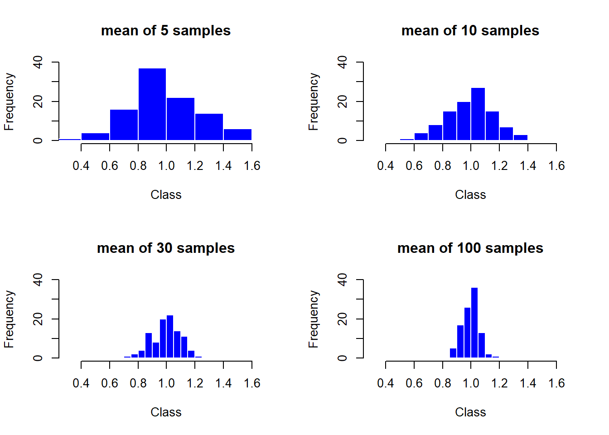

set.seed(12345) # 이 명령어는 난수생성기의 초기값을 설정하며, 아무 양수를 넣고 실행 후 아래 명령어를 실행하면, 매번 같은 수가 나옴
sample(x=1:10, size=5, replace=T) # 1부터 10의 수에서 크기가 5인 표본을 복원추출로 뽑음[1] 3 10 8 10 8Kim Jae Sook
January 30, 2024
# 난수발생에 따라 평균값이 xlim=c(0.3, 1.7)을 벗어나거나,
# 도수가 40보다 많아 ylim=c(0, 40)의 범위를 벗어나는 경우가 있을 수 있다.
par(mfrow=c(2,2))
column_1 <- c()
for (i in 1:100) column_1[i] <- mean(runif(5,0,2)) # 균등분포에서 난수발생하기
hist(column_1, border="white", col="blue", main="mean of 5 samples",
xlim=c(0.3,1.7), ylim=c(0,40), xlab="Class", ylab="Frequency")
column_2 <- c()
for (i in 1:100) column_2[i] <- mean(runif(10,0,2))
hist(column_2, border="white", col="blue", main="mean of 10 samples",
xlim=c(0.3,1.7), ylim=c(0,40), xlab="Class", ylab="Frequency")
column_3 <- c()
for (i in 1:100) column_3[i] <- mean(runif(30,0,2))
hist(column_3, border="white", col="blue", main="mean of 30 samples",
xlim=c(0.3,1.7), ylim=c(0,40), xlab="Class", ylab="Frequency")
column_4 <- c()
for (i in 1:100) column_4[i] <- mean(runif(100,0,2))
hist(column_4, border="white", col="blue", main="mean of 100 samples",
xlim=c(0.3,1.7), ylim=c(0,40), xlab="Class", ylab="Frequency")
중심극한정리에 의하면 표본평균 \(\bar{X}\)의 분포는 이론적으로 평균이 \(\mu=\frac{0+2}{2}=1\), 분산이 \(\frac{\sigma^2}{n}=\frac{(2-0)^2}{12}\times\frac{1}{5}=\frac{1}{15}=0.06667\)이다. 계산된 요약 통계량을 보면 이론값과 근사적으로 같다는 것을 확인할 수 있다. 최솟값은 점점 커지면서 1로 가고 있고 최댓값은 점점 작아지면서 1로 가고 있기에 대수의 법칙이 작동하고 있음을 알 수 있다.
stat_1 <- c(mean(column_1), var(column_1), median(column_1),
min(column_1), max(column_1))
stat_2 <- c(mean(column_2), var(column_2), median(column_2),
min(column_2), max(column_2))
stat_3 <- c(mean(column_3), var(column_3), median(column_3),
min(column_3), max(column_3))
stat_4 <- c(mean(column_4), var(column_4), median(column_4),
min(column_4), max(column_4))
SimStat <- cbind(stat_1, stat_2, stat_3, stat_4)
rownames(SimStat) <- c("mean", "var", "median", "min", "max")
colnames(SimStat) <- c("n=5", "n=10", "n=30", "n=100")
SimStat n=5 n=10 n=30 n=100
mean 0.98215204 0.99759046 0.99792404 0.997120891
var 0.06030627 0.02839346 0.01053265 0.003109049
median 0.97001181 1.01110299 1.00815885 1.001057480
min 0.38786052 0.57975311 0.70073091 0.881305201
max 1.54035985 1.33560145 1.21215504 1.156224741표준정규분포 \(N(0,1)\)을 따르는 확률변수를 \(Z\)라 하자. 독립적이면서 자유도가 \(v\)인 카이제곱 분포를 따르는 확률변수를 \(V\)라고 할 때, \(T=\dfrac{Z}{\sqrt{V/v}}\)의 분포를 자유도가 \(v\)인 \(t\)분포라고 한다. 이때 \(T \sim t(v)\)라고 표시한다.
\(X_1\), \(X_2\), \(\cdots\), \(X_n\) \(\sim N(\mu, \sigma^2)\), \(\bar{X} \sim N\left(\mu , \dfrac{\sigma^2}{n}\right)\) 일때, 표준정규분포로 변환이 가능하며, \(\dfrac{\bar{X}-\mu}{\sigma/\sqrt{n}} \sim N(0,1)\)이다.
모분산 \(\sigma^2\)을 모를 때, 표본분산 \(S^2 = \dfrac{\sum\limits_{i=1}^{n}(X_i - \bar{x})^2}{n-1}\)으로 모분산의 추정치로 사용한다.
즉, \(\sigma^2\)을 \(S^2\)으로 추정하면, 자유도가 \(n-1\)인 \(t\)분포를 따르게 되며, 이를 표현하면 \(\dfrac{\bar{X}-\mu}{S/\sqrt{n}} \sim t(n-1)\)이다. (\(S\)의 자유도가 \(n-1\)이고, 이것으로부터 \(t\)분포가 정의되기 때문에 자유도가 \(n-1\)이다.)
\(t\)분포를 따르는 이러한 변환을 스튜던트화(Studentized)라고 하며, \(t\)분포를 스튜던트 \(t\)분포라고도 한다.
[1] 0.3956322[1] 0.3989423[1] 0.5[1] 0.8373457[1] 0.1626543[1] 1[1] -1.697261[1] -2.042272[1] 1.697261[1] 2.042272x <- c(3.4, 3.3, 4.2, 4.4, 3.7, 4.5, 4.6, 3.8, 4.1)
library(TeachingDemos)
z.test(x, sd=0.4, 9) # 과거로부터 σ=0.4로 알려졌을때 신뢰구간
One Sample z-test
data: x
z = -37.5, n = 9.00000, Std. Dev. = 0.40000, Std. Dev. of the sample
mean = 0.13333, p-value < 2.2e-16
alternative hypothesis: true mean is not equal to 9
95 percent confidence interval:
3.738671 4.261329
sample estimates:
mean of x
4
One Sample t-test
data: x
t = 25.298, df = 8, p-value = 6.384e-09
alternative hypothesis: true mean is not equal to 0
95 percent confidence interval:
3.635389 4.364611
sample estimates:
mean of x
4 [1] 15.36584[1] 18.17231[1] 17.80529